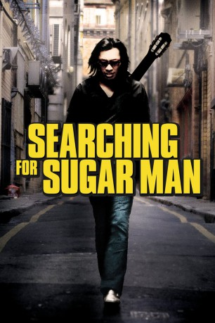

#523 Searching for Sugar Man
Auszeichnungen: 1 Oscars gewonnen 1 BAFTA-Awards gewonnen
 
 IMDB-Wertung: 8.2 / 10
IMDB-Wertung: 8.2 / 10  Metascore: 79
Metascore: 79 
Anfang der 70er Jahre produzierte der Musiker Sixto Rodriguez im für den Motown-Sound bekannten Detroit sein Debutalbum “Cold Fact”. Es wird ein Flopp. Sein zweites Album ebenso. Rodriguez gibt seine Musikkarriere auf und verschwindet. Was bleibt, ist das Gerücht, er habe auf der Bühne vor den Augen des entsetzten Publikums Selbstmord begangen. Jahrzehnte später machen sich zwei Fans auf die Suche nach Rodriguez und entdecken, dass er in einem anderen Teil der Welt, im Südafrika der Apartheidära, ein Superstar war. Der schwedische Regisseur Malik Bendjelloul hat die Suche dokumentiert: “Searching for Sugan Man” handelt von einem Mann, der nicht weiß, dass er berühmt ist.
Jahr: 2012
Dauer: 86 Minuten
FSK: 0
Land: Schweden Studio: Rapid Eye MoviesTonspuren: DD2.0 - ,
Untertitel:
Auflösung: 1080p (1920x1080) Größe: 5621 MB
Genre: Musik, Dokumentation, Biographie
Regisseur: Malik Bendjelloul
Drehbuch: Malik Bendjelloul, Stephen 'Sugar' Segerman, Craig Bartholomew Strydom
Soundtrack:
Darsteller:
- Clarence Avant als Himself - Former Chairman of Motown Records
- Rodriguez als Himself
- Malik Bendjelloul als Himself - Interviewer , uncredited
- Stephen 'Sugar' Segerman als Himself - Record Shop Owner
- Dennis Coffey als Himself - Co-Producer, Cold Fact 1970
- Mike Theodore als Himself - Co-Producer, Cold Fact 1970
- Dan DiMaggio als Himself - Bartender, The Brewery
- Jerome Ferretti als Himself - Bricklayer
- Steve Rowland als Himself - Producer, Coming from Reality 1971
- Willem Möller als Himself - Musician
- Craig Bartholomew Strydom als Himself - Music Journalist
- Ilse Assmann als Herself - Former Apartheid Archivist
- Steve M. Harris als Himself - Teal Trutone
- Robbie Mann als Himself - RPM Records
- Eva Rodriguez als Herself - Rodriguez's Eldest Daughter
- Regan Rodriguez als Herself - Rodriguez's Youngest Daughter
- Sandra Rodriguez-Kennedy als Herself - Rodriguez's Middle Daughter
- Rick Emmerson als Himself - Construction Worker Colleague
- Rian Malan als Himself - Journalist and Writer
Datei: X:\Dokumentationen\Biografie\Searching for Sugar Man (2012, FSKo.Al., 1920x1080).mkv seit 03.03.2015
Festplatte: HD Serien(SU-Z)+Dokus+Musik
 Es gibt insgesamt 21 Filme in der Gruppe 'Dokumentationen\Biografie'
Es gibt insgesamt 21 Filme in der Gruppe 'Dokumentationen\Biografie'